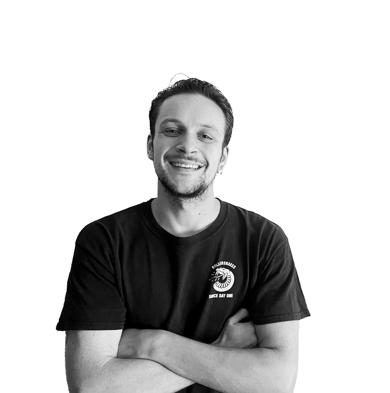
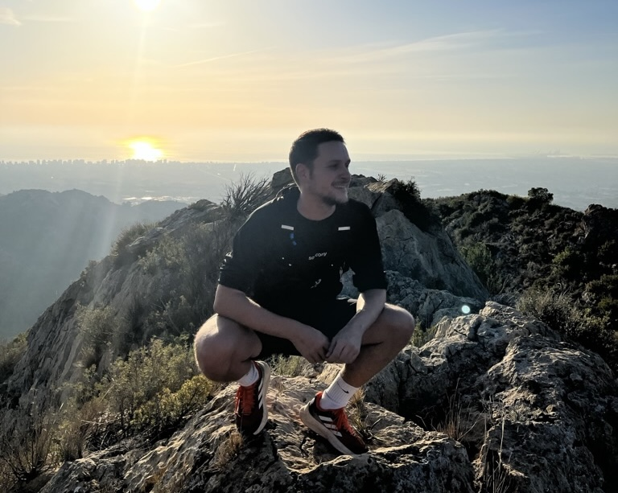

¡Bienvenidx! Me llamo Jaime y soy graduado en Publicidad y Relaciones Públicas. Actualmente estudio para formarme como Desarrollador Full Stack. Estoy en búsqueda de unas prácticas que me permitan aplicar mis conocimientos, desarrollar nuevas habilidades y crecer profesionalmente.
¿Hablamos?
Formación
- Máster en Programación Web - Full Stack Development | Oct 24 - Actualidad
- Centro de Estudios de Innovación, Diseño y Marketing, Valencia
- + Diseño Web HTML5, CSS y Javascript.
- + Desarrollo Full Stack.
- + Curso Diseño UX / UI | Abril 25
- Programa formativo superior: Agente del Cambio | Ene 24 - Mar 24
- Escuela de Organización Industrial y fondos europeos Next Generation, Castellón
- + Diseño de procesos y estrategias de digitalización en empresas.
- + Implementación de nuevas herramientas y metodologías digitales.
- + Identificación de áreas de mejora e innovación.
- Grado en Publicidad y relaciones públicas | Sep 15 - May 20
- Universitat Jaume I, Castellón
- + Intercambio académico en Univ. Nacional del Litoral, Argentina (2018).
- + Asignaturas de Diseño y comunicación visual.
Experiencia laboral

- Asistente de cocina + camarero en Monterrey Restaurante | Mar 24 - Ahora
- Gestión eficaz de múltiples tareas en un entorno dinámico y exigente.
- SDR + Account executive en Declarando Asesores | Oct 21 - Ene 23
- Prospección Inbound-Outbound y venta de producto SAAS en startup.
- + Detección de pains en clientes potenciales.
- + Relación con cartera de clientes y habilidades de negociación.
- + Consultorías de servicios y valor, cierre de ventas.
- Director creativo y diseño en Aries Comunicación | Oct 20 - Mar 21
- Proyecto de agencia de publicidad, trabajamos con clientes del sector de la restauración y la industria musical.
- + Creatividad y estrategias de comunicación.
- + Branding.
- + Creación de manuales de identidad y documentos corporativos.
- Prácticas en el Centro Europeo de Empresas e Innovación | Jun 20 - Ago 20
- Departamento de comunicación. Conocimiento del contexto startup: creación, fases de su desarrollo y lanzamiento.
- + Creación de contenido web para CEEI Castellón y Emprenem Junts.
- + Dinamización web y publicación en perfiles de redes sociales.
- + Planificación de eventos y talleres para startups.
- Vendedor deportivo en Decathlon | Jun 19 - Sep 19
- Venta, atención al cliente y asesoramiento deportivo durante el proceso de compra.
- Técnico deportivo en CTC Tenis Drive Academy | Ene 15 - Jun 19
- Enseñanza deportiva a grupos de distintas edades y niveles: inicio, perfeccionamiento y competición.
Aptitudes e idiomas

- Programación y desarrollo:
- + HTML 5, CSS y JavaScript | Profesional
- + AJAX, NodeJs, ReactJs, ExpressJs y Bases de datos | Estudiando actualmente
- + Python | Estudiando actualmente
- Otros programas:
- + Microsoft Office y sistema Apple | Profesional
- + Social Media | Profesional
- + SalesForce, Notion, Trello, Slack | Profesional
- + Pack Adobe: Illustrator, Photoshop, InDesign y Premiere | Profesional
- Comunicación y habilidades sociales:
- + Relación a corto, medio y largo plazo con cartera de clientes.
- + Negociación y habilidades de venta con clientes.
- + Experiencia en la creación y presentación de ideas y propuestas.
- + Creatividad y pensamiento estratégico.
- + Conceptualización de bocetos y dibujos a mano.
- Idiomas:
- Inglés | Profesional
- + FCE B2, Cambridge 2024 y estudiando para obtener el CAE C1, Cambridge.
- Catalán | Nativo
- + JQCV C1, Certificado.
- Español | Nativo